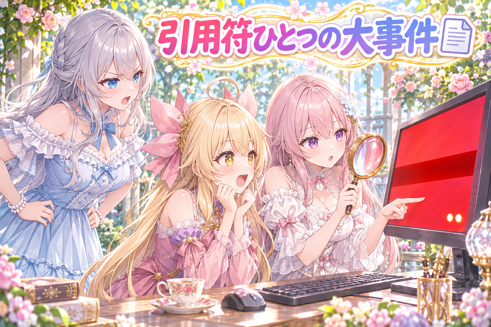
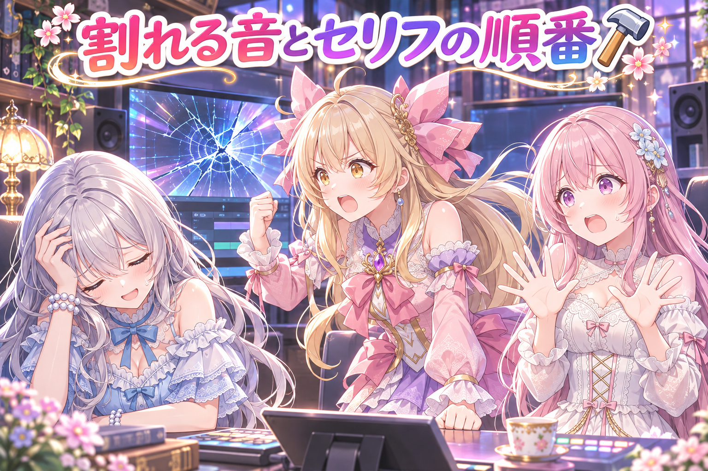
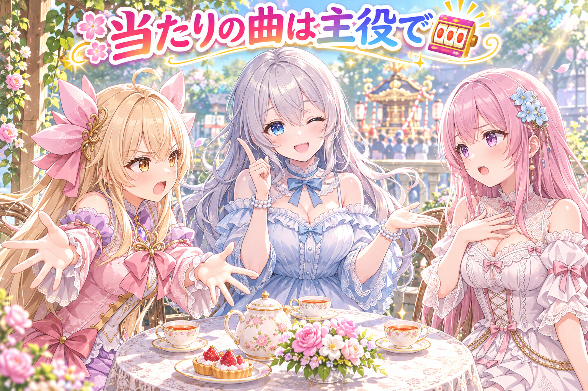
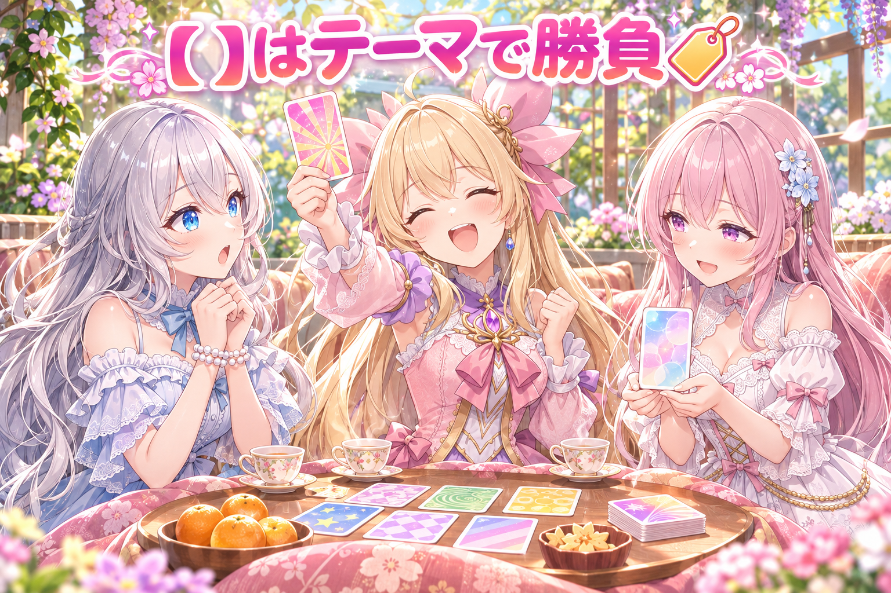
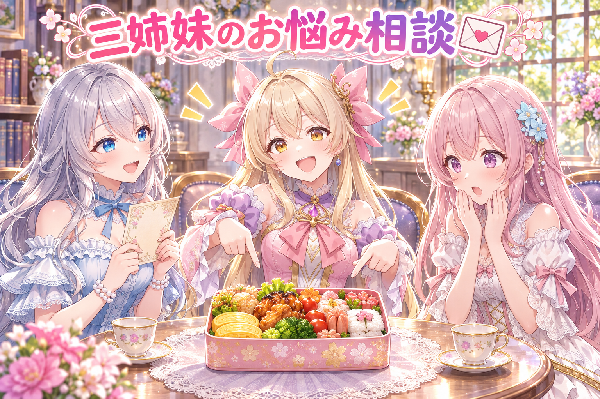

📌 3行まとめ
- アニメのパチンコ回で、静かな前奏の曲に切り替えた瞬間に無音の穴ができていたのを、曲の入りの位置と重ね方を直して埋めた
- 設定ファイルに引用符をそのまま入れてしまい、設定が読めず試験が20件近く赤に。直したうえで「設定は全部読めるか」を確かめる試験を足した
- ガラスが割れる演出の順番、当たりの曲の扱い、動画タイトルの【】の付け方を整え、夜はゲームの宿敵バトル配信
1. 静かな前奏が「無音の穴」に化けた
三姉妹のアニメのパチンコ回で、盛り上がる場面に向けて運動会でおなじみのクラシック『天国と地獄』へ曲を切り替えていました。ところがこの曲、ファイルの頭にほんの一瞬の無音があり、そのあとも静かな前奏が続きます。そのせいで、いちばん盛り上げたい切り替えの瞬間に、まるで曲が抜けたように聞こえてしまっていました。 そこで、この曲は前奏を飛ばして十数秒あたりの盛り上がる所から鳴らすように変更。さらに、指定した曲だけは前の曲に少し重ねながら入れ替える仕組みを足しました。指定していない曲は今までどおりの切り替えのままで、変わっていないことも試験で確かめています。
📝 ポイント（初心者向け解説・技術メモ・まとめ）
- 初心者向け解説：お芝居で、次の役者さんが小さな声でゆっくり登場すると、客席には一瞬だれもいないように見えちゃう。だから最初から元気な所で出てきてもらうか、前の役者さんと少しだけ一緒に舞台に立ってもらうことにしたの🎭
- 技術メモ：曲ごとの設定に開始位置（秒）を持たせ、頭の無音と静かな前奏を飛ばす。切り替えはクロスフェードを曲単位のフラグで有効にし、フラグの無い曲は従来どおり。試験では「フラグ付きの曲は重なりに無音の区間が無い」「フラグ無しの曲は出力が変わらない」「重ねる前の部分は元と同じ音」の3点を確認した。
- ひとことまとめ：曲の切り替えは、波形の頭の静けさまで見て決める。
2. 👀 今日のやらかし：引用符ひとつで設定が丸ごと読めない

キャラクターの特徴をまとめた設定ファイル（JSON 形式）に、セリフ例を書き足したときのこと。文字列の中に引用符の記号をそのまま入れてしまい、ファイル全体が「読めない JSON」になっていました。その設定を読むはずの見張りの仕組みが動けず、関連する試験が20件近くまとめて赤に。 記号をきちんと逃がす形に直したうえで、「設定フォルダの JSON は全部読めるか」を確かめる試験を新しく追加しました。壊れた版のファイルで試すと、ちゃんと赤になることも確認済みです。ついでに、最近決まったルールに追いついていなかった古い試験も、今の決まりに合わせて直しました。
📝 ポイント（初心者向け解説・技術メモ・まとめ）
- 初心者向け解説：お手紙の最後にうっかり「おしまい」のシールを貼ったら、続きを読んでもらえなくなっちゃった……みたいなこと。目印の記号は、文章の途中で使うときに特別な書き方が必要なの✉️
- 技術メモ：JSON の文字列内の引用符はバックスラッシュでエスケープが必要。手書きで直すより、json.dumps で書き出すほうが安全。再発防止として、設定ディレクトリ配下の .json を全件 json.loads する試験を追加し、壊れたファイルで赤になることを確認。あわせて、仕様変更に追従していなかった古い試験を現行の決まりに合わせて更新した。
- ひとことまとめ：設定ファイルにも「読めるかどうか」の試験を一本。
3. ガシャーンは叫びより先に

アニメには、強いひと言と同時に画面にひびが入る演出があります。今日の動画レビューで「1ターン前に割れてます」と指摘があり、原因を追うと、ガラスの割れる音とセリフが同時に始まっていて、順番がぼやけていたのが根っこでした。 そこで、まずガシャーンと割れて、そのあとに叫びが来るように、ひびの行だけセリフをほんの一瞬遅らせ、ガラスの余韻はセリフの下で小さく鳴るように調整。ただ最初の調整では、余韻がまだ大きくて、セリフの頭のひと文字が埋もれて別の言葉に聞こえてしまったため、遅らせ方を少し長く、余韻をもっと小さくやり直しました。すでに完成のお墨付きが出ていた回は、例外の一覧に入れて今までどおりにしています。
📝 ポイント（初心者向け解説・技術メモ・まとめ）
- 初心者向け解説：雷がピカッと光ってからゴロゴロ鳴ると、ちゃんと雷だって分かるよね。同時に来るとびっくりするだけで、何が起きたか分からなくなっちゃうの⚡
- 技術メモ：効果音とセリフを同時に置くと因果が伝わりにくい。効果音を先に立て、セリフをコンマ数秒ずらすと「原因→反応」の順に聞こえる。余韻はセリフの下に回るよう十数dB下げ、セリフの頭の子音が埋もれないかを実際に聞いて確認する。調整前に承認済みの回は例外リストで固定し、遡って変わらないようにした。
- ひとことまとめ：演出の順番は、ほんの一瞬の差で伝わり方が変わる。
4. ボーナス曲が鳴ったら、ほかの曲はお休み

同じパチンコ回で、当たりのときに流すボーナスの曲を新しいものに入れ替えました。最初はこの曲を効果音として扱っていましたが、背景で流れている曲とぶつかって聞きにくくなります。 そこで、ボーナスの曲は効果音ではなく「その場面だけ流れる特別な曲（スポットの曲）」として扱うことに変更。鳴っている間は背景の曲を止めるようにして、昔の効果音の扱いのまま使うと見張りが止める仕組みも足しました。また、スポットの曲が流れる長さに決まった上限を設けていたのを外し、気持ちが続いている間は流し続け、場面の区切りでは必ず止まるようにしています。
📝 ポイント（初心者向け解説・技術メモ・まとめ）
- 初心者向け解説：お誕生日のケーキが出てきたら、テレビの音を消してみんなで歌うよね。主役の曲が来たら、ほかの音はちょっとお休みしてもらうのがいちばん伝わるの🎂
- 技術メモ：短いジングルでも、場面の主役になる曲は効果音レーンではなくBGMレーンで扱う。再生中は背景曲のゲインをエンベロープで落としてミュート。スポット曲の長さは固定ターン数の打ち切りをやめ、感情が続く間＋シーン区切りで停止。旧い効果音扱いのまま指定されたら門で赤にし、修正を外すと試験が赤になることを確認。
- ひとことまとめ：主役の曲が鳴るときは、ほかの曲に道をゆずってもらう。
5. 題の先頭の【】はキャラ名じゃなくテーマ

動画のタイトルの先頭につける【】に、これまではキャラクターの名前を入れることがありました。でも、初めて見る人にとって名前だけでは何の回か分かりにくい。そこで【パチンコ】【水戸黄門】のように、その回のテーマを入れる決まりに変えました。 あわせて、歴史上の人物の名前は伏せ字にしないことに。伏せる言葉の一覧から水戸黄門を外し、歴史の名前は伏せない例外も足しました。キャラ名が先頭に入ったら見張りが止める仕組みと、それを確かめる試験も用意しています。
📝 ポイント（初心者向け解説・技術メモ・まとめ）
- 初心者向け解説：本屋さんの棚の札に「ルピナスの本」と書いてあっても何の本か分からないけど、「料理」と書いてあれば一目で分かるよね。タイトルの先頭は、その札みたいなものなの📚
- 技術メモ：タイトル先頭の括弧内に登場キャラ名が入っていたらエラーにするチェックを追加し、生成指示と書き手側のルールにも同じ決まりを反映。伏せ字辞書から歴史上の人物名を外し、歴史名は常に伏せない例外リストを用意。修正を外すと試験が赤になることを確認した。
- ひとことまとめ：タイトルの先頭は、名前よりも「何の回か」。
6. 今日届けたお話と、夜のゲーム配信
この日は、三姉妹が異世界に転生してもらった特典がまさかの電子レンジだった、という長めのアニメ回を公開。短い漫画動画も、手巻き寿司に好きな具をぜんぶのせる回と、こたつにちょっとだけ入るつもりが出てこられなくなる回の2本を届けました。 夜には、オンラインのRPGで宿敵に挑む配信の2回目も行いました（配信の中身の詳細はここでは触れません。最新のお知らせは X https://x.com/irisfionaAIBS をのぞいてくださいね）。
📝 ポイント（初心者向け解説・技術メモ・まとめ）
- 初心者向け解説：作ったお話は、ためておくより一本ずつ届けるのがいちばん。そして作る人がちゃんと眠ることも、次のお話のための大事な材料なの🌙
- 技術メモ：この日は長尺アニメ1本・短尺漫画動画2本を公開。長尺の動画は公開前に、別の採点役が5秒おきに切り出したコマの一覧と書き起こしを見て、敵対的にレビューする流れで点数と直す所を出している。長尺の投稿は1日1本までという決まりも、この日に追加した。
- ひとことまとめ：届ける数より、続けられるペース。
7. 🎁 お楽しみコーナー：三姉妹の相談室

今日は、常連リスナーさんから届きそうなお悩みに、三姉妹が本気でアドバイスします。
みんなの「つい詰め込みすぎちゃう物」と、それを上手に減らすコツ、よかったらコメントでこっそり教えてね！
8. 💐 今日のまとめ
- 曲を切り替えるときは、前奏の静けさまで含めて入りの位置を決めると、無音の穴を防げる
- 設定ファイルにも「全部読めるか」の試験を置くと、記号ひとつのミスがすぐ見つかる
- 割れる音→セリフのように、ほんの一瞬の順番の差で演出の伝わり方が変わる
- 主役の曲が鳴るときは、背景の曲にお休みしてもらうとまっすぐ届く
みんなは、作品の「ここだけは順番を大事にしてる」っていう所、ある？
💬 コメント
お名前とコメントだけで送れるよ（承認されるとみんなに表示されます🌸）
コメントを読み込み中…